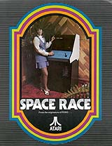
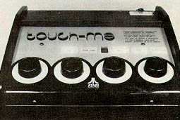
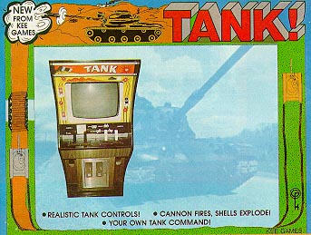
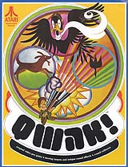

Click Images for full information
1971
Nolan Bushnell and Ted Dabney's version of the popular computer game Spacewar!
For more info on Computer Space, check the Computer Space Fan website: http://www.computerspacefan.com/
Nov. 29, 1972
Atari Pong would be a smash hit, however Nolan was not totally convinced.
Click here to view restoration of Pong serial # ZZ-001
1973 
Rebound from Atari. Taking the concept of Pong to an entirely new "angle" so to speak. Rebound was Atari's video game version of Volleyball. The game required two players to compete head to head in this game and with enough practice, players could learn to angle the ball and beat their opponent. Although a black & white game, it came in a rather uniquely designed cabinet with colorful graphics on the sides.
Oct. 11,
1973
The original video maze
game, Gotcha was Atari's fourth effort (Space Race
was the second, Pong Doubles the third). This photo was reproduced
from the original brochure. They just don't make 'em like they used
to. The controller is a not what you think, its not a Trakball,
nope that wouldn't happen until Atari Football a few years later.
The controller on this game was a joystick with a domed top to it, well actuall
a pair of them on the control panel... oddly or humorously
enough... they look like a pair of
breasts. Atari designers certainly knew how to
have a lot of fun.
Mar. 4, 1974 After Super Pong came Quadrapong. What's interesting is that this was essentially the same game as Elimination, which was created by Kee Games, Joe Keenan's company. Bushnell and Keenan decided that the best way to reach the most distributors was to design and manufacture similar games but under different names. The first experiment of this sort was Rebound (Atari) and Spike (Kee). The key distinction between the two was a "spike" button Spike had. According to Steve Bristow, the designer, "If you timed it right you could do a real killer spike. "

Nov. 4, 1974  Tank was the next true milestone in Atari's history. Who invented it, however, is a matter of opinion. Some credit Lyle Rains, who was the engineering v.p. in coin-op until only recently in 1982, but Steve Bristow says it was he who came up with the concept. (For you VCS fans, Tank is Combat CX-2601.) "I was working on it when I hired Lyle," he recalls, "Then I gave it to him and he finished it. A lot of the implementation was his, but the original idea was mine." Both agree that Tank carried Atari through 1975.
Atari
was always catching flak from the Pinball industry that video games would
never surpass Pinball games in sales or game play. Atari's
answer to them: PinPong, a pinball version of Pong. Later on
Atari would introduce a newer version of Pin-Pong known as Video Pinball
into the arcades, Video Pinball entered the home market as a stand alone
console and also as a cartridge for the Atari 2600 VCS.
Gran Trak 10, Atari's 1974 venture into the world of video racing games. Featuring excellent sound effects sound as the racing sound of your engine, squeal of the tires and realistic grash sound. For added realism it included a real steering wheel, shift lever and pedals. Gran Trak 10 gave an over head look down at the course that your car had to race through. A monster of a game in a monster of a cabinet which weighed a whopping 400lbs. !
Qwak!
A unique and innovative game from Atari in 1974. Players fire
at flying on-screen ducks using a rifle with a light gun attached to the
end. Your shots would appear on the screen as you fired, ducks
would "veer" away from missed shots. If a duck was shot it
would fall into the marsh to be retrieved by your on-screen digital
dog. The coin-op incorporated a unique alarm system that if the gun was stolen
or tampered with the game would emit a loud buzzing sound.
|
Work in Progress on this page,
excuse the mess...
{kind=link}
{kind=link}
{kind=link}
{kind=link}
{kind=link}
{kind=link}
{kind=link}
{kind=link}